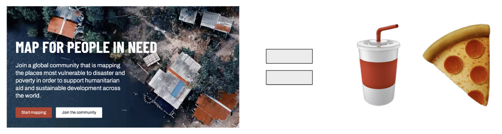

Challenge 01
2024 International Humanitarian mapathon¶
Day 1: Wednesday April 17 3pm¶

Links:
これらの段階的な手順は、OpenStreetMap で Tasking Manager を使用してマッピングを開始するのに役立ちます。
すでに OpenStreetMap アカウントをお持ちですか？ステップ 4 に進むことができます。
Tasking Manager のホームページの右上隅にある Sign up ボタンをクリックします。

名前とメールアドレスを入力します。この情報を使用して、サインアッププロセスを案内します。

OpenStreetMap.org に登録するための新しいタブが開きます。アカウント情報を入力し、フォームの下にある Sign up ボタンを押します。

タブを閉じて、Tasking Manager に戻ります。 Log in ボタンをクリックします。
メインナビゲーションで Explore projects を選択して、マッピングを手伝うプロジェクトを見つけます。または、マッピングマラソンのインストラクターから提供されたリンクを使用します。
プロジェクトの紹介を読んで、Contribute をクリックしてマッピングタスクを開始します。

ランダムに選択されたマッピングタスクをマッピングするには、Map a task ボタンをクリックします。
または、マップまたはタスクから 1 つを選択し、「Map selected task」を選択することもできます。

マッピングが終了したら、編集を保存し、Submit task ボタンを選択します。

これで、ステップ 7 に戻ってマッピングの新しいタスクを選択できます。OpenStreetMap への貢献ありがとうございます！
Day 2: Thursday April 18 3pm¶

Links to Humanitarian Organizations:
Links to humanitarian open data:
Links to open source mapping tools:
UN チームはハッカソンのためのデータパッケージを提供します。ハッカソンが始まるまで参加者には内容がわかりません！
プロンプト：関係を理解し、視覚化し、物語を構築する
提出物：データ可視化コンポーネント（地図、チャートなど）が必要です
期限：地図の提出期限は 3 日目のセッションが始まる時点です。
Day 3: Friday April 19 10am¶

Links:
- Youth Mappers
- Reitaku University
- UCLA
- USC
- Aoyama Gakuin University
- University of Hawaii
- Centro Geo Mexico
Agenda:
- 各地域のライトニングプレゼンテーションの概要
-
国際的なミートアップ
- 異なる地域からの4-5人で30-45分のブレイクアウトルーム
- プロンプト：
- アイスブレーカー
- アイスクリーム
- 地図？
- 今日何を食べましたか
- お気に入りのフレンチフライのスタイル
- お気に入りの食べ物/料理
- 自己紹介
- InstagramやWhatsAppを共有する
- このマップアソンに参加した経験を共有する
- 作成した地図と得られた教訓を共有する
- アイスブレーカー
-
🏆 マップアワード
- UNグループからのパネル審査
- Padletを通じたピープルズチョイスアワード